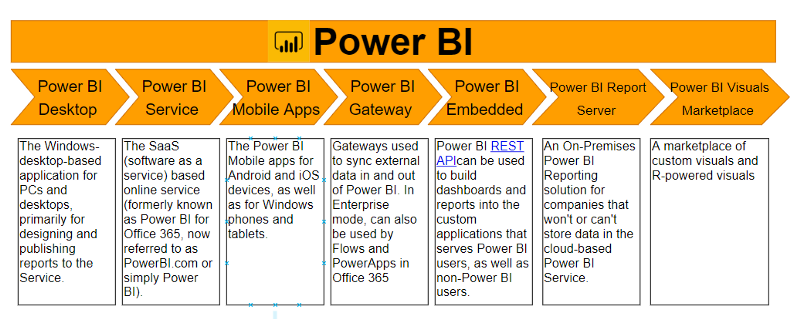
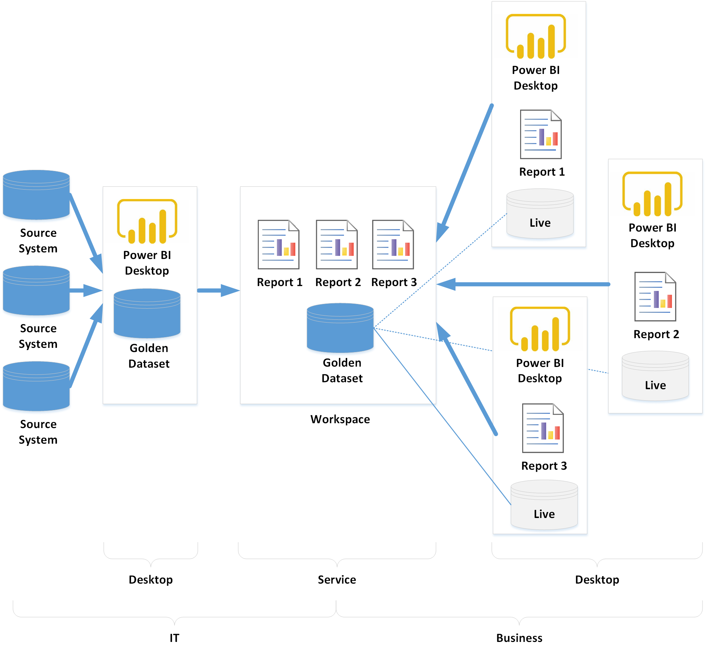
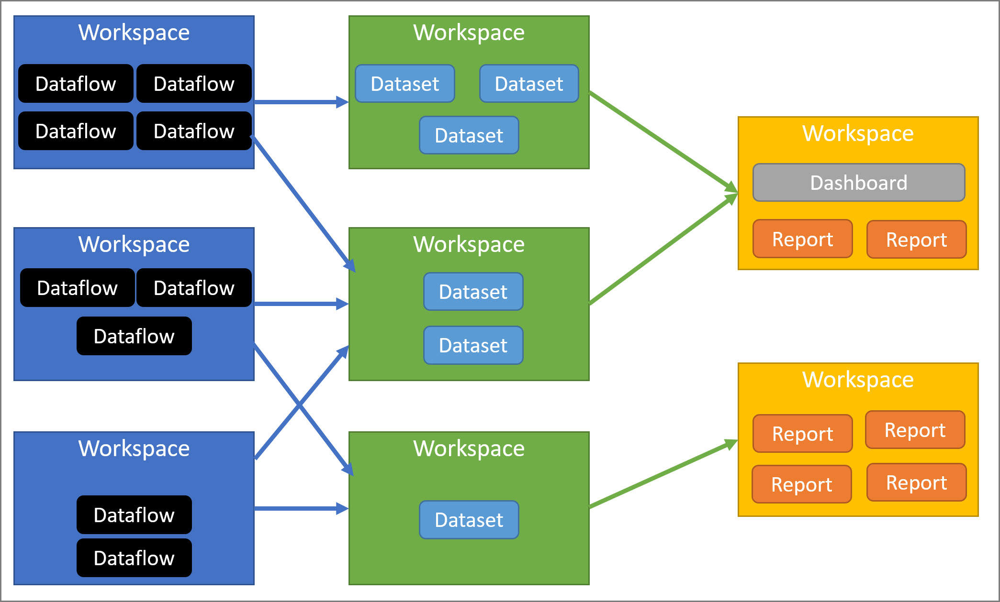
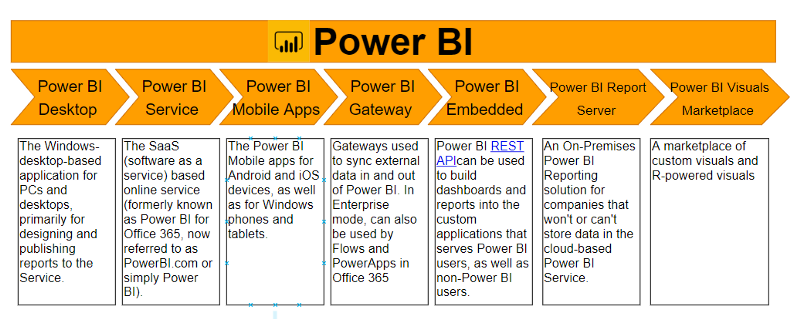
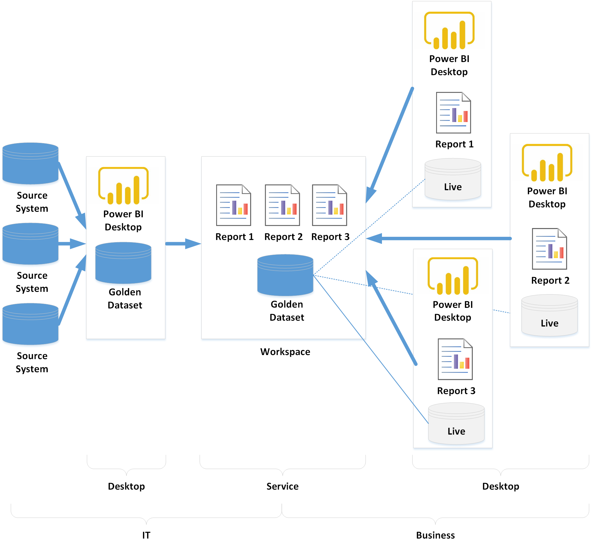
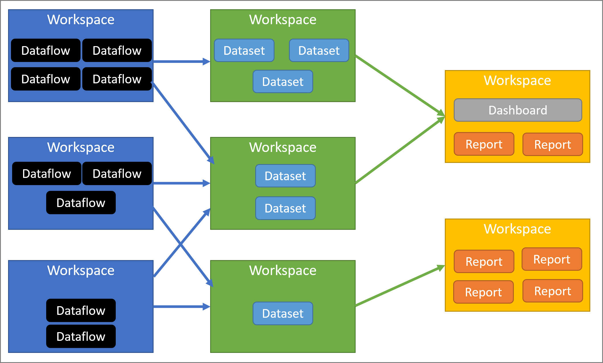

PowerBI
References
PowerBI Building Blocks
PowerBI Workflow
PowerBI Products
PowerBI Desktop - build reports - PC based
PowerBI Service - publish reports - SaaS (software as a service) cloud
PowerBI Mobile Apps - view reports/dashboards - apps for Android, iOS, Windows Phone/Tablets
PowerBI Gateway - sync data bidirectional onprem. Also in Flows and PowerApps
PowerBI Embedded - REST API to build dashboards/reports into custom apps. Allows pushing data in real time and creating datasets and dashboards
PowerBI Report Server - on-prem reporting solution for non-cloud data
PowerBI Visuals Marketplace - custom visuals and R-powered visuals
Introduction
Elements of PowerBI and how they work together
Typical designer workflow - create reports in Desktop, publish to PowerBI Service, modify in Service. Then create dashboards
There are Power BI Samples to start with
Power BI Service elements
Navigation pane
Microsoft 365 app launcher
Power BI home button
Icon buttons, including settings, help, and feedback
Search box
Favorited dashboards that you use the most
Favorite and frequent dashboards, reports, and workspaces
Reports built by the Power BI Community, picked by the Power BI team
Power BI Concepts
Capacities/Workspaces - resources and evironments for major building blocks
- Major building blocks
datasets - sources of data DB, excel, flat file
dataflows - optional automation of refreshing datasets from external
workbooks - special handling of excel workbooks as datasets
reports - combining one or more datasets into various analyses and presentations using DAX (Data Analysis Expressions)
dashboards - combining multiple reports into a single pane
Capacities
set of resources (storage, cpu, memory) used to host & deliver powerbi content
capacities can be shared or dedicated (requires subscription)
Workspaces
created on capacities
containers for major building blocks
- two types
My workspace - personal workspace, can share your dashboards/reports
- Workspaces - collaboration, share content, create an app
New workspaces - seem to be like a Workspaces but require less licensing???
Create, publish, manage apps for your organisation
Staging area/containers for content of Power BI app
App - collection of dashboards and reports
Dataflows
Bring in data from disparate sources
Prepared/staged data for datasets
Use dedicated connectors
Datasets
collection of imported data or connection to data
can source data from dataflows
associated with one or more workspaces
visualisations from one dataset can be on multiple dashboards
powerbi doesn’t change underlying dataset
Reports
one or more pages of visualisations (visuals)
visualisation examples - line charts, maps, tree maps
all visualisations come from a single dataset
reports - from scratch, from colleagues, from reports within datasets e.g. Power View in Excel
two modes of interaction - reading or editing
reports are listed under Content tab of a Workspace
one report is contained in a single workspace
one report can be associated with multiple dashboards within one workspace
- number of datasources in a report
Power BI standard creates only one datasource per report
Power BI standard can import a report from Power BI Desktop
Power BI Desktop can create and use reports with multiple datasources
Dashboards
single canvas containing zero or more tiles and widgets
one tile pinned from a report displays a single visualisation from a dataset
dashboard brings multiple relevant views into a single pane
listed under content tab of the associated workspace
one dashboard - single workspace
one dashboard can display visualisations from multiple datasets and reports
Workbooks
special type of dataset for excel
Get Data/Connect to excel (not Import)
pin elements
can enter Excel directly to edit spreadsheet
Dashboard Components
Navigation pane - locate/move to workspaces and building blocks - dashboard, report, workbook, dataset
Canvas - displays dashboard visualisation tiles or widgets
Q&A question box - ask a question and Power BI gives a visualisation
Icons in black header bar - settings, notifications, download, help
Dashboard Title - active workspace and dashboard
Microsoft 365 app launcher - 3x3 dot grid
Power BI home - go back home (Power BI label)
Labeled icons in gray menu bar - additional options for interacting with content

 




